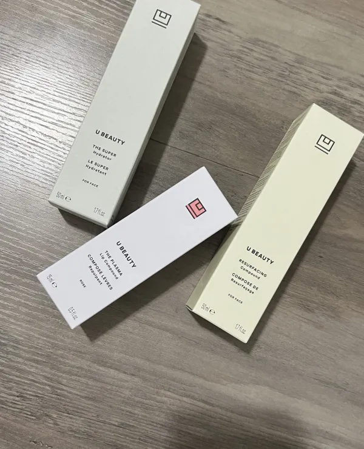

U Beauty Review
I first heard of U Beauty when it started getting some hyper on social media last year. I was a little
hesitant to try it because of the price but when the brand reached out to see if I’d like to try a few products,
I thought it would be the perfect opportunity! U Beauty sent me two products to try: The Resurfacing Compound and
the Super Hydrator. In the few months that I’ve incorporated them into my routine, they have really transformed by
skin and I can firmly say, I will be purchasing them again once my bottles are out. If you’ve been considering
trying their products, I’ve put together a full U Beauty review to help you learn more about the products, and
my experience with them!